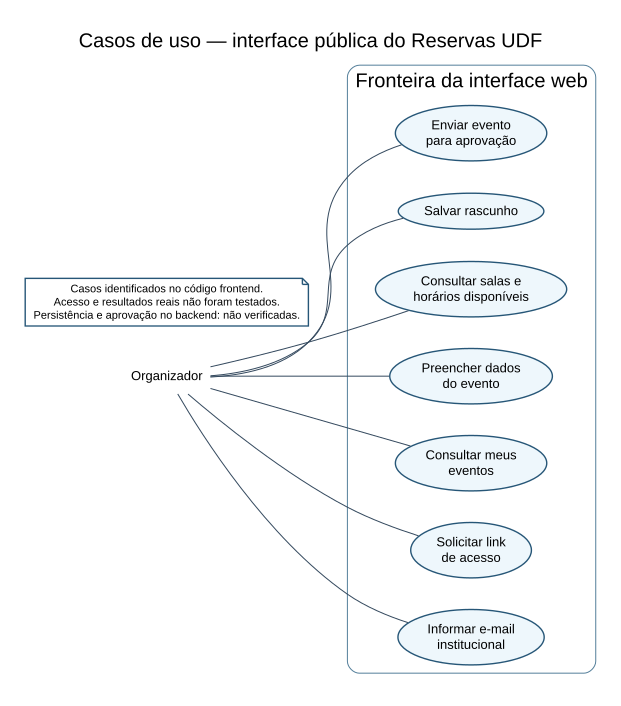
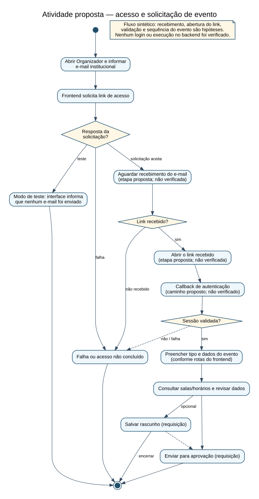
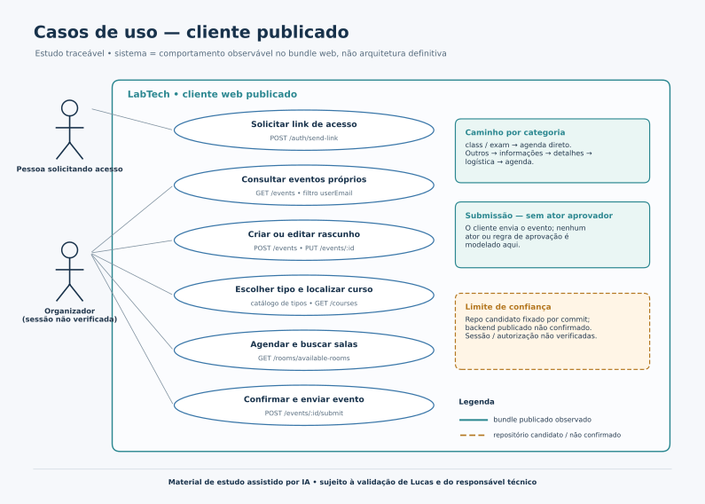
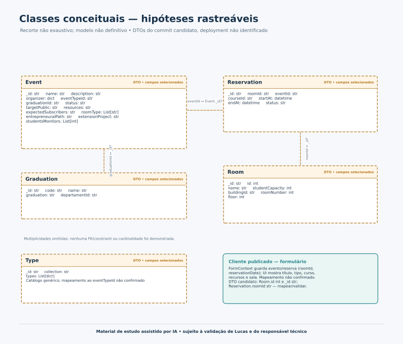
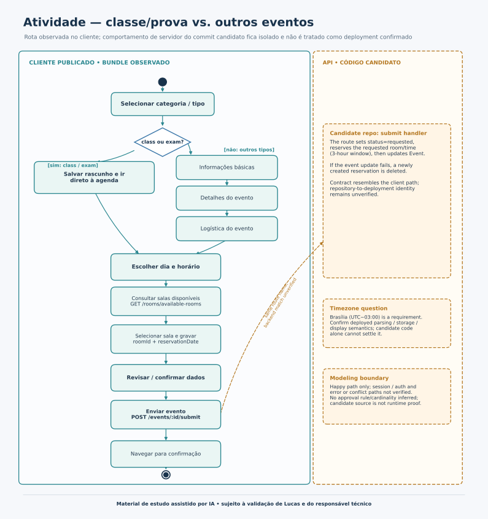
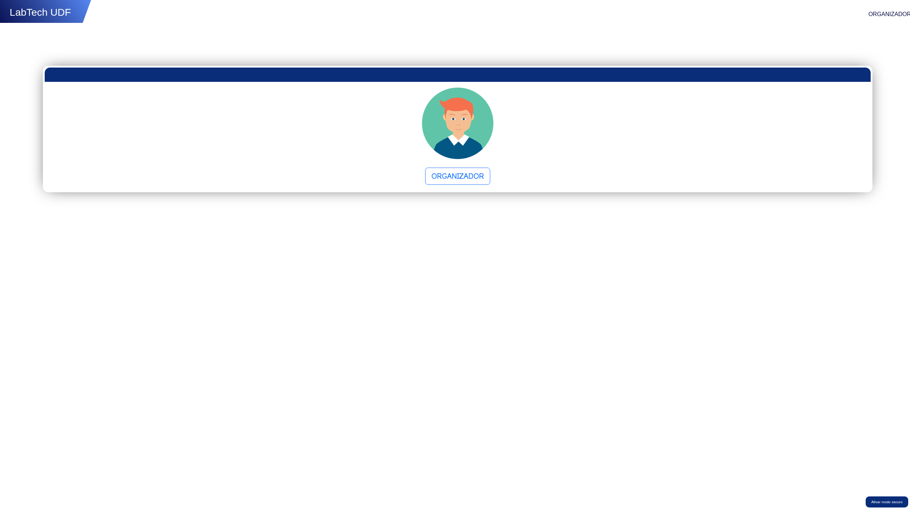
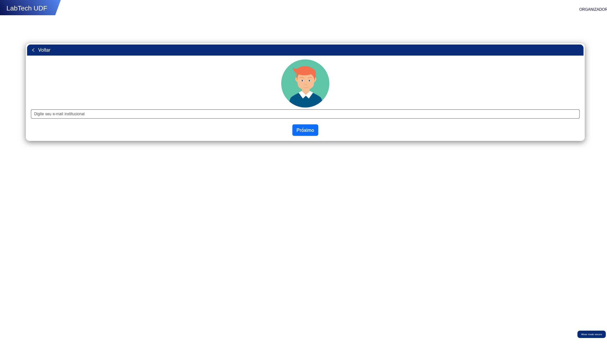
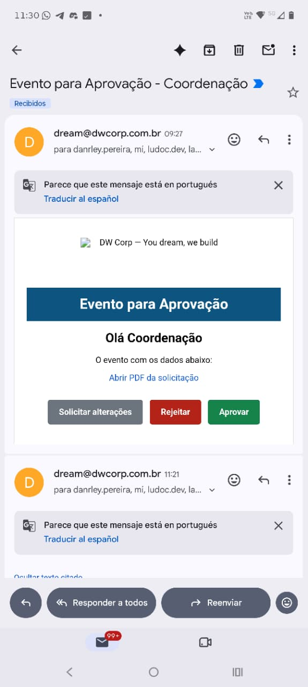
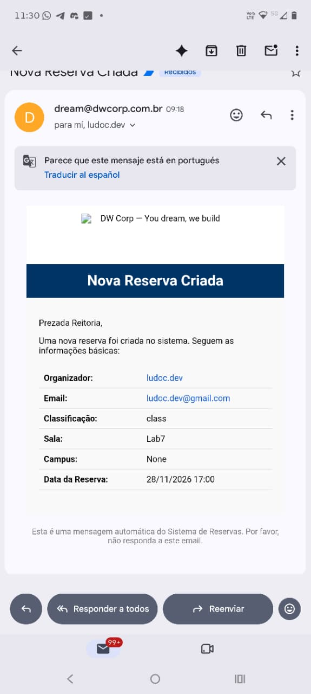

Observação
Elemento encontrado em página pública ou código do frontend consultado. Isso demonstra o que foi visto no cliente, não que uma ação tenha sido executada ou aceita pelo servidor.
Modelagem UML, backlog e especificação funcional e técnica.
O relatório reúne a análise de um fluxo proposto para organização de eventos e solicitação de espaço. O backlog e os critérios de aceite são propostas, não tarefas comprovadamente concluídas. Elaborado por Lucas Dórea Cardoso com apoio de inteligência artificial; revisão do material por Lucas ainda pendente.
Lucas informa ter feito chamadas com Darlas. Não há registros dessas chamadas nesta cópia; por isso, não atribuímos datas, quantidade ou conteúdo, nem as apresentamos como evidência documentada.
O relatório e esta página são materiais preliminares para revisão, não validação do sistema.
Elemento encontrado em página pública ou código do frontend consultado. Isso demonstra o que foi visto no cliente, não que uma ação tenha sido executada ou aceita pelo servidor.
Interpretação necessária para conectar indícios, como uma relação de domínio ou ordem de etapas. Nos diagramas, relações tracejadas e sequências hipotéticas devem ser lidas como inferências.
Comportamento ou requisito desejável para o produto. É decisão de design a validar, não descrição de algo já implementado.
Leia cada diagrama perguntando: qual é a fonte?, o que foi observado diretamente? e o que foi completado por interpretação ou proposto? Não converta nomes de telas, atributos ou rotas em prova de persistência ou funcionamento.
Interações do organizador identificadas no cliente. O diagrama representa possibilidades observadas no código, não comprova execução ou sucesso.

Modelo conceitual derivado de campos e chamadas do frontend. Atributos não comprovam persistência; relações tracejadas são inferências e não fixam cardinalidades.

Síntese inferida do acesso e do fluxo de evento, não uma gravação de navegação nem uma validação operacional. Caminhos de falha e teste são possibilidades modeladas.

Os três diagramas abaixo foram integrados dos arquivos de estudo existentes. São propostas assistidas por IA: os caminhos de navegação descritos foram conferidos no cliente web, mas isso não valida operação, servidor ou deployment. O repositório backend citado no material é candidato, sem identidade de implantação confirmada. Não são diagramas definitivos; Lucas e o responsável técnico precisam revisar.
Capacidades visíveis no cliente web publicado; sem ator aprovador ou regra de aprovação inventados.

Recorte de DTOs do commit candidato. Relações tracejadas são referência por ID ou hipótese de mapeamento; cardinalidades não foram presumidas.

Ramo de navegação observado no código do cliente; bloco de API permanece separado como candidato e não comprova backend implantado.

O requisito de horário de Brasília (America/Sao_Paulo) é especificação de Lucas para Reservas UDF, não implementação comprovada. A nota histórica de código Java que aparecia na versão anterior foi removida: não demonstrava vínculo com o cliente atual nem com o Squad 6.
Roteiro sem teste nem demonstração do MVP; a sessão apresenta análise, evidências, propostas e limites.
Capturas fornecidas para esta revisão, preservadas como PNG original e sem informação pessoal visível. Elas mostram apenas as telas nelas registradas; não documentam login nem submissão. Essa ausência não estabelece que o fluxo falhe.


Lucas afirma que o fluxo funciona. As imagens são reproduzidas sem alteração e mostram as mensagens recebidas; não comprovam, por si só, todas as etapas do fluxo.


O relatório é preliminar: faltam evidências documentais dos encontros informados e validação funcional. Os documentos ligados abaixo reúnem as fontes e propostas utilizadas nesta apresentação.
O relatório mantém as capturas anteriores e inclui as duas capturas originais de mensagens recebidas, sem alteração. Lucas relata que o fluxo funciona; as imagens não demonstram todas as etapas. Não há registro documental das chamadas com Darlas nesta cópia. Permanecem pendentes revisão por Lucas, validação acadêmica e confirmação da identidade da implementação/deployment. Conteúdo e diagramas foram preparados com assistência de IA, sujeitos a revisão; não apresentam o trabalho como autoria exclusiva.